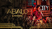

Luan Rafael Domingos Santana é um cantor e compositor de músicas sertanejas.


Luan Santana nasceu em Campo Grande no dia 13 de março de 1991 e iniciou sua carreira em 2009.
solteirou, musica lançada em 2022
abalo emocional, musica lançada em 2022
maldito girassol, musaica lancçada em 2022
vingança, musica lançada em 2018
garotas não merecem chorar, musica lancada em 2013